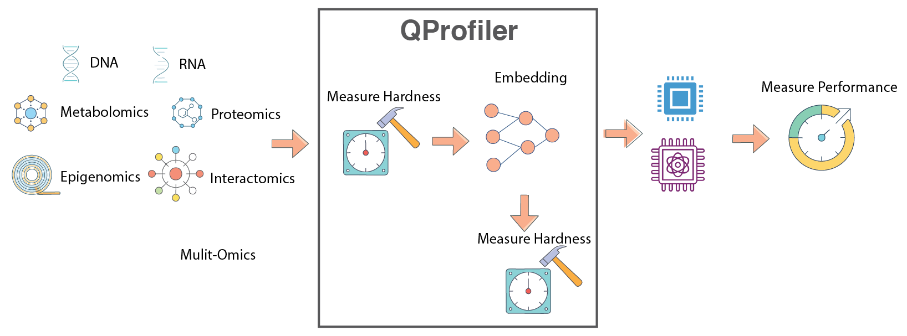
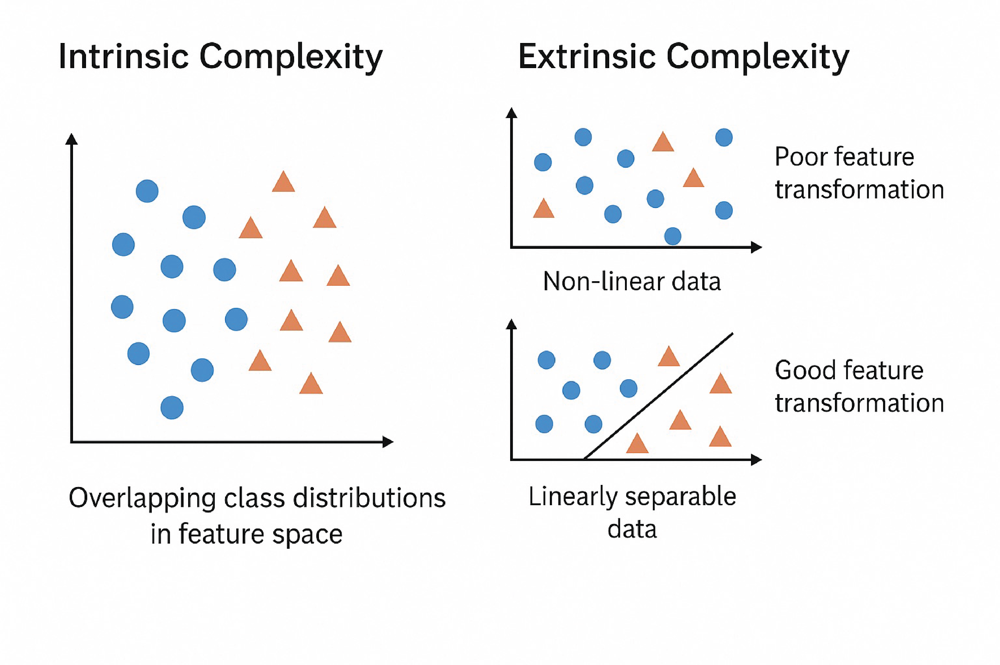
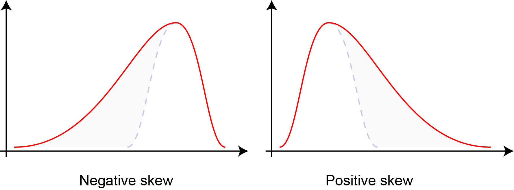
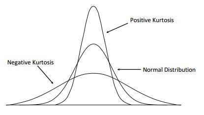
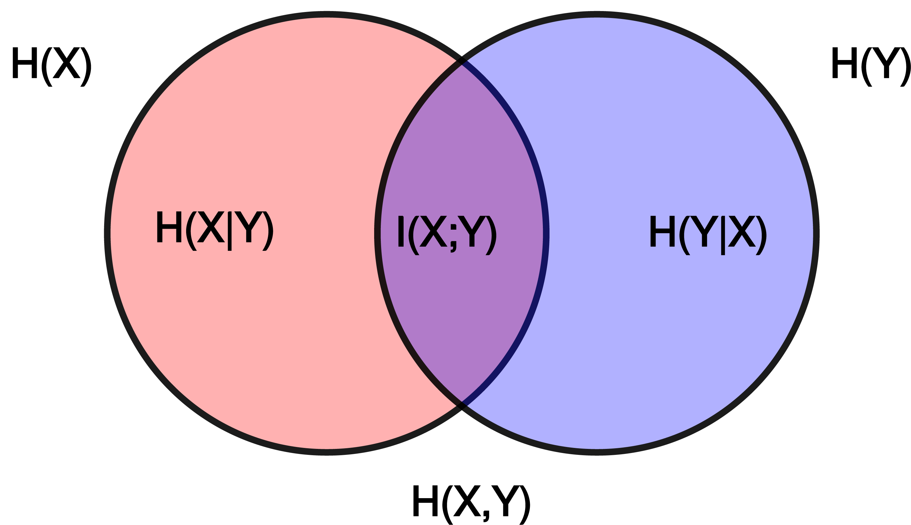
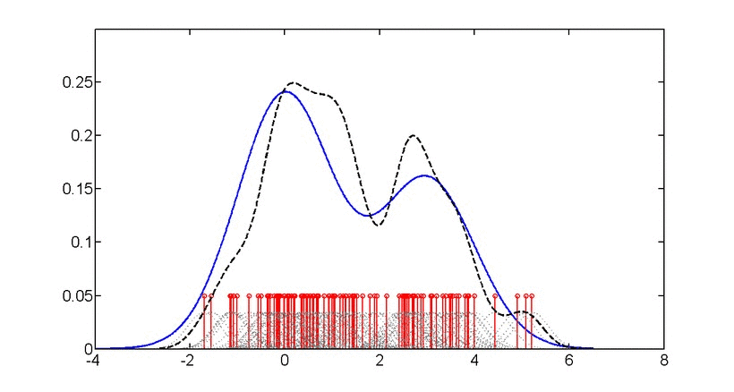

QProfiler#
Automated ML Benchmarking with Data Complexity Analysis
QProfiler is a comprehensive tool that goes beyond simple model evaluation. It provides:
- 🔬 Dual Analysis Approach
Model Performance: Benchmarks both classical and quantum machine learning models
Data Complexity: Computes intrinsic dataset characteristics to understand model behavior
- 📊 What QProfiler Does
Runs Multiple Models: Evaluates classical (RF, SVM, LR, etc.) and quantum (QSVC, PQK, VQC) algorithms
Analyzes Data Complexity: Computes 15+ complexity measures before model training
Correlates Results: Links model performance to data characteristics
Automates Workflows: Handles data splitting, scaling, encoding, and evaluation
{kind=link}

QProfiler workflow: Automated benchmarking pipeline combining data complexity analysis with model performance evaluation.#
Important
Key Feature: QProfiler computes data complexity metrics before running models, providing insights into why certain models perform better on specific datasets. This helps identify which quantum or classical approaches are most suitable for your data.
Warning
Binary Classification Focus: QProfiler is currently optimized for binary classification tasks (2 classes). While multi-class classification is supported experimentally, results may vary and some metrics may not be fully optimized. For best results, use datasets with exactly 2 classes.
Note
Before you start, make sure that you have installed QBioCode correctly by following the Installation guide.
Usage#
QProfiler can be used in two ways: as a command-line tool or as a Python library in your scripts and notebooks.
Command-Line Interface#
After installing QBioCode with the apps extras (pip install qbiocode[apps]), you can run QProfiler from the command line:
Basic Usage (Default Config)
qprofiler
This runs QProfiler with the default configuration file installed with the package.
Using Custom Configuration
You can override the default configuration in several ways:
# Use a custom config file from a specific directory (absolute path)
qprofiler --config-dir=/absolute/path/to/configs --config-name=my_config
# Use a config file from current directory
cd /path/to/your/project
qprofiler --config-dir=$(pwd)/configs --config-name=my_config
# Override specific parameters from command line
qprofiler model=[svc,rf,qsvc] n_jobs=5 backend=simulator
# Combine custom config with parameter overrides
qprofiler --config-dir=$(pwd)/configs --config-name=experiment1 seed=123 test_size=0.2
Batch Mode
For processing multiple datasets in parallel:
qprofiler-batch
This will process all CSV files in the configured input directory and generate combined results.
Configuration File Location
QProfiler uses Hydra for configuration management. By default, it uses the config file installed with the package at:
<site-packages>/apps/qprofiler/configs/config.yaml
To use your own configuration:
Create a custom config file in your project directory:
# my_config.yaml file_dataset: "my_dataset.csv" folder_path: "data/" model: [rf, svc, qsvc] embeddings: [none, pca] n_components: 3 backend: simulator
Run with custom config:
qprofiler --config-dir=$(pwd) --config-name=my_config
Tip
Hydra Configuration Override Syntax:
--config-dir: Absolute path to directory containing config files--config-name: Config filename (without .yaml extension)key=value: Override individual parameterskey=[item1,item2]: Override list parameters
Example combining all:
qprofiler --config-dir=$(pwd)/configs --config-name=base \
model=[rf,svc] backend=simulator seed=42
See the full configuration guide for all available options.
Python Library Usage#
You can also import and use QProfiler components directly in Python:
from qbiocode import model_run, evaluate
from qbiocode import scaler_fn, feature_encoding
import pandas as pd
# Load your data
data = pd.read_csv('dataset.csv')
X = data.drop('target', axis=1)
y = data['target']
# Evaluate data complexity
complexity_metrics = evaluate(X, y, 'my_dataset')
# Run a specific model
results = model_run(
X_train, X_test, y_train, y_test,
model_type='rf',
dataset_name='my_dataset'
)
For complete examples, see the QProfiler Tutorial.
Data Complexity Measures#
In data mining and machine learning, we can distinguish between two fundamental types of complexity that affect model performance:
- Intrinsic Complexity
Inherent structure of the data that makes it difficult to learn, independent of the algorithm:
Class distribution: Imbalanced or overlapping classes
Non-linear decision boundaries: Complex separating surfaces
Higher-order correlations: Interactions between multiple features
Noise: Random variations in the data
- Extrinsic Complexity
Complexity arising from external factors dependent on the algorithm or preprocessing:
Preprocessing issues: Inadequate feature scaling or transformation
Misalignment between model and data: Model assumptions don’t match data structure
Learning limitations of models: Insufficient capacity or inappropriate inductive bias
{kind=link}

Intrinsic vs. Extrinsic Complexity: Understanding the sources of learning difficulty in machine learning tasks.#
QProfiler automatically computes the following complexity measures for each dataset to characterize its intrinsic properties and predict model performance.
Dimensionality Metrics#
- Number of Features, Samples, and Feature-to-Sample Ratio
Basic dataset dimensions that characterize the problem scale. High feature-to-sample ratios (\(p/n > 1\)) indicate high-dimensional problems prone to overfitting, known as the “curse of dimensionality.”
\[\text{Ratio} = \frac{p}{n}\]where \(p\) = number of features, \(n\) = number of samples.
Reference: Bellman, R. (1961). Adaptive Control Processes. Princeton University Press.
- Intrinsic Dimension
Estimates the true dimensionality of data embedded in high-dimensional space. While data may have \(p\) features, it often lies on a lower-dimensional manifold of dimension \(d \ll p\). Lower intrinsic dimension suggests the data structure is simpler than the ambient dimension implies.
\[d_{\text{intrinsic}} \ll p\]Reference: Fukunaga, K., & Olsen, D. R. (1971). “An algorithm for finding intrinsic dimensionality of data.” IEEE Transactions on Computers, C-20(2), 176-183.
- Fractal Dimension
Measures self-similarity and geometric complexity of data structure. Values range from 1 (simple line) to 2 (space-filling), indicating varying degrees of complexity and irregularity in the data manifold.
\[D_f = \lim_{\epsilon \to 0} \frac{\log N(\epsilon)}{\log(1/\epsilon)}\]where \(N(\epsilon)\) is the number of boxes of size \(\epsilon\) needed to cover the data.
Sierpinski Triangle: A classic example of a fractal with self-similar structure at multiple scales, illustrating the concept of fractal dimension.#
Reference: Higuchi, T. (1988). “Approach to an irregular time series on the basis of the fractal theory.” Physica D: Nonlinear Phenomena, 31(2), 277-283.
{kind=link}
Statistical Properties#
- Variance
Measures data spread across features. Low variance features (\(\sigma^2 \approx 0\)) may not contribute to discrimination; high variance may indicate noise or important signal variation.
\[\sigma^2 = \frac{1}{n}\sum_{i=1}^{n}(x_i - \mu)^2\]- Coefficient of Variation (CV)
Normalized measure of dispersion that enables comparison across features with different scales. Expressed as percentage of the mean.
\[CV = \frac{\sigma}{\mu} \times 100\%\]Reference: Abdi, H. (2010). “Coefficient of variation.” Encyclopedia of Research Design, 1, 169-171.
- Skewness
Third statistical moment measuring distribution asymmetry. Negative skewness indicates left-tailed distributions, zero indicates symmetry (normal distribution), and positive skewness indicates right-tailed distributions.
\[\text{Skewness} = \frac{E[(X-\mu)^3]}{\sigma^3}\]
Distribution skewness: negative skew (left-tailed), zero skew (symmetric), and positive skew (right-tailed). Skewness quantifies the asymmetry of probability distributions.#
- Kurtosis
Fourth statistical moment measuring tail heaviness and peakedness of distributions. Higher kurtosis indicates heavier tails and more outliers; lower kurtosis indicates lighter tails. Normal distribution has kurtosis of 3 (excess kurtosis of 0).
\[\text{Kurtosis} = \frac{E[(X-\mu)^4]}{\sigma^4}\]
Distribution kurtosis: platykurtic (light tails, kurtosis < 3), mesokurtic (normal, kurtosis = 3), and leptokurtic (heavy tails, kurtosis > 3). Kurtosis quantifies tail behavior and outlier propensity.#
Reference: Joanes, D. N., & Gill, C. A. (1998). “Comparing measures of sample skewness and kurtosis.” Journal of the Royal Statistical Society: Series D, 47(1), 183-189.
- Nonzero Value Count
Measures data sparsity. High sparsity (many zeros) indicates sparse representations that may benefit from specialized algorithms or dimensionality reduction.
- Low Variance Feature Count
Number of features below the 25th percentile of variance distribution. Identifies potentially uninformative features that contribute little to model discrimination.
{kind=link}
{kind=link}
Separability Measures#
- Fisher Discriminant Ratio (FDR)
Quantifies class separability as the ratio of between-class to within-class scatter. Higher values indicate better linear separability. Only defined for binary classification.
\[\text{FDR} = \frac{\text{tr}(\mathbf{S}_B)}{\text{tr}(\mathbf{S}_W)}\]where \(\mathbf{S}_B\) is between-class scatter and \(\mathbf{S}_W\) is within-class scatter.
Reference: Fisher, R. A. (1936). “The use of multiple measurements in taxonomic problems.” Annals of Eugenics, 7(2), 179-188.
- Mutual Information
Measures statistical dependence between features and class labels. Higher values indicate features are more informative for classification. Mutual information can be expressed in terms of entropy:
\[\begin{split}I(X;Y) &= \sum_{x,y} p(x,y) \log\frac{p(x,y)}{p(x)p(y)} \\ &= H(X) + H(Y) - H(X,Y) \\ &= H(X) - H(X|Y) \\ &= H(Y) - H(Y|X)\end{split}\]where \(H(X)\) and \(H(Y)\) are the marginal entropies, \(H(X,Y)\) is the joint entropy, and \(H(X|Y)\) and \(H(Y|X)\) are the conditional entropies.

Relationship between entropy, mutual information, and relative entropy (KL divergence). Mutual information quantifies the reduction in uncertainty about one variable given knowledge of another.#
Reference: Cover, T. M., & Thomas, J. A. (2006). Elements of Information Theory. Wiley-Interscience.
- Total Correlation
Sum of absolute correlations between all feature pairs (excluding self-correlation). Indicates feature redundancy and multicollinearity in the dataset.
\[TC = \sum_{i \neq j} |\rho_{ij}|\]where \(\rho_{ij}\) is the correlation between features \(i\) and \(j\).
Reference: Watanabe, S. (1960). “Information theoretical analysis of multivariate correlation.” IBM Journal of Research and Development, 4(1), 66-82.
- Log Kernel Density
Mean log-likelihood of data under Gaussian kernel density estimation. Indicates data concentration and distribution smoothness. Higher (less negative) values suggest more concentrated data.
\[\log p(x) = \frac{1}{n}\sum_{i=1}^{n} \log\left(\frac{1}{nh^d}\sum_{j=1}^{n}K\left(\frac{x_i-x_j}{h}\right)\right)\]where \(K\) is the kernel function and \(h\) is the bandwidth.

Gaussian kernel density estimation: Animation showing how individual kernels (dashed lines) combine to form the overall density estimate (solid line). The bandwidth parameter controls the smoothness of the estimate.#
Reference: Silverman, B. W. (1986). Density Estimation for Statistics and Data Analysis. Chapman and Hall.
{kind=link}
{kind=link}
Matrix Properties#
- Condition Number
Ratio of largest to smallest singular value of the data matrix. Measures numerical stability and sensitivity to perturbations. High values (\(\kappa > 10^3\)) indicate ill-conditioned problems with potential numerical instability.
\[\kappa(\mathbf{X}) = \frac{\sigma_{\max}(\mathbf{X})}{\sigma_{\min}(\mathbf{X})} = \|\mathbf{X}\| \cdot \|\mathbf{X}^{-1}\|\]where \(\sigma_{\max}\) and \(\sigma_{\min}\) are the largest and smallest singular values.
Reference: Golub, G. H., & Van Loan, C. F. (2013). Matrix Computations (4th ed.). Johns Hopkins University Press.
Key References
Comprehensive Overview: Data Complexity slides from ISMB 2025 tutorial
Meta-Learning Context: Lorena, A. C., et al. (2019). “How Complex is your classification problem? A survey on measuring classification complexity.” ACM Computing Surveys, 52(5), 1-34.
Configuration#
QProfiler uses a YAML configuration file to manage all experimental parameters, ensuring reproducibility and enabling batch processing of multiple datasets and models.
Quick Start#
Basic Usage:
python qprofiler.py --config-name=config.yaml
Get Help:
python qprofiler.py --help
Configuration Overview#
The config.yaml file controls all aspects of the QProfiler workflow:
Input dataset paths
File selection (all or specific)
Random seeds for reproducibility
Backend selection (simulator/hardware)
IBM Quantum credentials
Shots and error mitigation
Dimensionality reduction methods
Feature scaling options
Train/test split ratios
Classical models (SVC, RF, LR, etc.)
Quantum models (QSVC, VQC, PQK)
Hyperparameter grids
Key Configuration Sections#
1. Dataset Configuration
# Process all CSV files in folder
folder_path: 'test_data/'
file_dataset: 'ALL'
# Or select specific files
file_dataset: ['dataset1.csv', 'dataset2.csv']
# Handle datasets with row names/IDs in first column
index_col: False # Set to True if first column contains row identifiers
# Reproducibility seeds
seed: 42 # Classical algorithms
q_seed: 42 # Quantum algorithms
Important
Row Names Support: If your CSV files have row identifiers (sample IDs, patient IDs, etc.) in the first column, set index_col: True. This will:
Use the first column as row index (excluded from features)
Properly handle datasets with sample identifiers
Maintain data integrity for downstream analysis
Example dataset with row names:
SampleID,Feature1,Feature2,Feature3,Label
Patient001,0.5,0.3,0.8,0
Patient002,0.2,0.7,0.4,1
Patient003,0.9,0.1,0.6,0
With index_col: True, only Feature1, Feature2, and Feature3 are used as features (Label is the target).
Default behavior (index_col: False):
Feature1,Feature2,Feature3,Label
0.5,0.3,0.8,0
0.2,0.7,0.4,1
0.9,0.1,0.6,0
All columns except the last are treated as features.
2. Quantum Backend Setup
# Use exact simulator (noiseless)
backend: 'simulator'
# Use AerSimulator with custom simulation method
backend: 'simulator_aer'
sim_method: 'statevector' # or matrix_product_state, tensor_network, etc.
# Use noisy simulation based on IBM device noise model
backend: 'noisy_ibm_cleveland' # Replace 'ibm_cleveland' with any IBM device name
sim_method: 'matrix_product_state' # Recommended for noisy simulations
shots: 1024
# Or use IBM Quantum hardware
backend: 'ibm_least' # Least busy device
shots: 1024
resil_level: 1 # Error mitigation (1-3)
# IBM credentials (required for hardware and noisy simulation)
qiskit_json_path: '~/.qiskit/qiskit-ibm.json'
name: 'account_qbc' # Account alias
ibm_instance: 'hub/group/project' # Optional
3. Dimensionality Reduction
# Apply embeddings
embeddings: ['pca', 'nmf', 'autoencoder']
n_components: 3
# No embedding
embeddings: ['none']
4. Train/Test Split
test_size: 0.3 # 70:30 train:test ratio
# Stratified sampling - maintains class distribution in splits
stratify: ['y'] # Enable stratification
# stratify: [] # Disable stratification
scaling: ['True'] # Enable MinMaxScaler feature scaling
Note
Stratified Sampling:
Stratification ensures that the class distribution in your training and test sets matches the original dataset distribution. This is particularly important for:
Imbalanced datasets: When one class has significantly fewer samples than others
Small datasets: To ensure all classes are represented in both train and test sets
Reproducible results: Consistent class proportions across different random splits
When to use stratification:
✅ Enable (
stratify: ['y']): For classification tasks with imbalanced classes✅ Enable: When you have small datasets with multiple classes
❌ Disable (
stratify: []): When you have perfectly balanced classes and large datasets
Example:
If your dataset has 90% class 0 and 10% class 1, stratification ensures both train and test sets maintain this 90:10 ratio, preventing scenarios where the test set might have no class 1 samples.
5. Model Selection
Available models:
Classical:
svc,dt,lr,nb,rf,mlpQuantum:
qsvc,vqc,qnn,pqk
# Run all models
model: ['svc', 'dt', 'lr', 'nb', 'rf', 'mlp',
'qsvc', 'vqc', 'qnn', 'pqk']
# Or select specific models
model: ['rf', 'qsvc', 'pqk']
6. Hyperparameter Configuration
Each model can have standard parameters and grid search parameters:
# Standard parameters
svc_args:
C: 0.01
gamma: 0.1
kernel: 'linear'
# Grid search parameters
gridsearch_svc_args:
C: [0.1, 1, 10, 100]
gamma: [0.001, 0.01, 0.1, 1]
kernel: ['linear', 'rbf', 'poly', 'sigmoid']
Important
For quantum models: Grid search requires generating separate config files for each parameter combination.
Use the qbiocode.utils.generate_qml_experiment_configs() utility function:
from qbiocode.utils import generate_qml_experiment_configs
# Generate config files for quantum model hyperparameter tuning
num_configs, used_files = generate_qml_experiment_configs(
template_config_path='configs/config.yaml',
output_dir='configs/qml_gridsearch',
data_dirs=['data/tutorial_test_data/lower_dim_datasets'],
qmethods=['qnn', 'vqc', 'qsvc'],
reps=[1, 2],
n_components=[5, 10],
embeddings=['none', 'pca', 'isomap'] # Subset of available: none, pca, lle, isomap, spectral, umap, nmf
)
print(f"Generated {num_configs} configuration files")
# Then run QProfiler for each generated config
Running Generated Configs
After generating config files, you have several options to execute them:
Option 1: Manual execution (for small numbers of configs)
qprofiler --config configs/qml_gridsearch/exp_1.yaml
qprofiler --config configs/qml_gridsearch/exp_2.yaml
# ... etc.
Option 2: Bash loop (for local execution)
# Run all configs sequentially
for i in {1..100}; do
qprofiler --config configs/qml_gridsearch/exp_${i}.yaml
done
Option 3: SLURM array job (for HPC clusters)
#!/bin/bash
#SBATCH --array=1-100%10 # Run 100 jobs, max 10 concurrent
#SBATCH -c 9 # 9 CPUs per job
#SBATCH --mem=12000 # 12GB memory
#SBATCH -p your_partition
qprofiler --config configs/qml_gridsearch/exp_${SLURM_ARRAY_TASK_ID}.yaml
Tip
For large hyperparameter grids (hundreds of configs), use SLURM array jobs on HPC clusters for parallel execution.
Adjust --array range to match your number of configs and %N to control concurrent jobs based on cluster resources.
See qbiocode.utils.generate_qml_experiment_configs() for full documentation and all available parameters.
Detailed Configuration Reference#
For comprehensive documentation of all configuration parameters, see:
Example Configuration#
A complete example config.yaml is available at: apps/qprofiler/configs/config.yaml
Tip
Best Practices:
Always set random seeds for reproducibility
Start with a small subset of models to test configuration
Use grid search for classical models, separate configs for quantum models
Monitor quantum backend availability before large runs
Save configurations with descriptive names for different experiments
Troubleshooting#
Common Issues:
Missing config file: Ensure
config.yamlis in the correct directoryYAML syntax errors: Validate YAML format (indentation, colons, quotes)
IBM Quantum access: Verify credentials and instance permissions
Memory errors: Reduce number of parallel jobs (
n_jobsparameter)Quantum backend errors: Check backend availability and queue status
Note
The project will fail if the config.yaml file is missing, incorrectly formatted, or contains invalid parameter values. Always validate your configuration before running large experiments.
Checkpoint and Restart#
When processing large batches of datasets, jobs may be interrupted due to time limits, system failures, or resource constraints. QProfiler provides a checkpoint restart utility to resume processing without recomputing completed datasets.
How It Works#
The checkpoint_restart function scans a previous results directory and identifies which datasets were fully processed by checking for completion marker files (e.g., RawDataEvaluation.csv). You can then filter your dataset list to process only the remaining incomplete datasets.
Basic Usage#
from qbiocode.utils.dataset_checkpoint import checkpoint_restart
import os
# Identify completed datasets from previous run
completed = checkpoint_restart(
previous_results_dir='./previous_run_results',
verbose=True
)
# Get all datasets to process
all_datasets = [f.replace('.csv', '') for f in os.listdir('./data')
if f.endswith('.csv')]
# Filter to only incomplete datasets
remaining = [d for d in all_datasets if d not in completed]
print(f"Previously completed: {len(completed)} datasets")
print(f"Remaining to process: {len(remaining)} datasets")
# Continue processing with remaining datasets
# (use 'remaining' list in your batch processing loop)
Advanced Usage#
Custom Settings
from qbiocode.utils.dataset_checkpoint import checkpoint_restart
# Custom completion marker and directory naming
completed = checkpoint_restart(
previous_results_dir='./results_2024_01_15',
completion_marker='ModelResults.csv', # Different marker file
prefix_length=0, # No prefix to strip from directory names
verbose=True
)
Integration with Batch Processing
import os
from qbiocode.utils.dataset_checkpoint import checkpoint_restart
from qbiocode.evaluation import model_run
# Step 1: Check for previous results
if os.path.exists('./previous_results'):
completed_datasets = checkpoint_restart(
previous_results_dir='./previous_results',
verbose=True
)
else:
completed_datasets = []
# Step 2: Get list of all datasets
data_dir = './datasets'
all_datasets = [f.replace('.csv', '') for f in os.listdir(data_dir)
if f.endswith('.csv')]
# Step 3: Filter to incomplete datasets
datasets_to_process = [d for d in all_datasets
if d not in completed_datasets]
# Step 4: Process remaining datasets
for dataset_name in datasets_to_process:
print(f"Processing {dataset_name}...")
# Your QProfiler processing code here
# ...
Parameters#
previous_results_dir(str): Path to directory with previous run resultscompletion_marker(str, optional): Filename indicating completion (default:'RawDataEvaluation.csv')prefix_length(int, optional): Characters to strip from directory names (default: 8 for'dataset_'prefix)verbose(bool, optional): Print progress information (default: False)
Returns#
List of dataset names that were successfully completed in the previous run.
Tip
Best Practices for Checkpoint Restart:
Always use
verbose=Trueto verify which datasets are being skippedKeep previous results directories until you confirm the new run completed successfully
Manually combine CSV results from previous and current runs if needed
Consider using unique output directories for each run (e.g., with timestamps)
Note
The checkpoint restart function only checks for the presence of the completion marker file, not its contents. Ensure your previous run actually completed successfully for the identified datasets.
See also
QProfiler Tutorial - Complete workflow examples
Configuration Guide - Setting up batch processing
qbiocode.utils.dataset_checkpoint.checkpoint_restart()- Full API documentation
Utility Functions#
QBioCode provides several utility functions that can help with batch processing workflows, configuration management, and file organization.
Finding Duplicate Files#
When generating multiple experiment configurations (e.g., via grid search), you may accidentally create duplicate configuration files. The find_duplicate_files function helps identify these duplicates before running batch jobs.
from qbiocode.utils.find_duplicates import find_duplicate_files
# Find duplicate YAML configs
duplicates = find_duplicate_files(
'configs/qml_gridsearch/',
file_pattern='.yaml',
verbose=True
)
if duplicates:
print(f"Warning: Found {len(duplicates)} duplicate configuration pairs")
for file1, file2 in duplicates:
print(f" {file1}")
print(f" {file2}")
# Optionally remove one of the duplicates
# os.remove(file2)
Use Cases:
Validate experiment configurations before batch processing
Clean up redundant config files from grid search generation
Identify duplicate datasets in data directories
Audit configuration consistency across projects
Searching for Strings in Files#
The find_string_in_files function helps you quickly locate specific parameters or settings across multiple configuration files.
from qbiocode.utils.find_string import find_string_in_files
# Find all configs using PCA embedding
results = find_string_in_files(
'configs/experiments/',
'embeddings: pca',
file_pattern='.yaml',
return_lines=True
)
print(f"Found in {len(results)} configuration files:")
for filepath, matches in results.items():
print(f"\n{filepath}:")
for line_num, line_content in matches:
print(f" Line {line_num}: {line_content.strip()}")
Use Cases:
Find all configs using a specific model or embedding
Audit parameter settings across experiments
Locate configurations with specific quantum backend settings
Validate consistency of hyperparameters
Tracking Job Progress#
The track_progress function monitors computational job progress by comparing completed datasets against total input datasets. Unlike checkpoint_restart (which returns completed dataset names for filtering), track_progress provides progress statistics and remaining work estimates.
from qbiocode.utils.combine_evals_results import track_progress
# Monitor progress of current job
completed, num_done, num_remaining = track_progress(
input_dataset_dir='data/inputs',
current_results_dir='results/current_run',
completion_marker='RawDataEvaluation.csv',
verbose=True
)
print(f"\nProgress: {num_done}/{num_done + num_remaining} datasets completed")
if num_remaining == 0:
print("Job complete! Ready to combine results.")
Key Differences from checkpoint_restart:
checkpoint_restart: Returns list of completed names → Use for resuming jobstrack_progress: Returns list + progress counts → Use for monitoring status
Use Cases:
Monitor progress of long-running batch jobs
Verify job completion before combining results
Estimate remaining computation time
Generate progress reports
Combining Results from Interrupted Jobs#
When a job is interrupted and resumed, combine_results merges results from both runs into unified output files.
from qbiocode.utils.combine_evals_results import combine_results
# Combine results from interrupted and resumed runs
eval_df, results_df = combine_results(
prev_results_dir='results/run1_interrupted',
recent_results_dir='results/run2_resumed',
verbose=True
)
print(f"Combined {len(eval_df)} evaluation records")
print(f"Combined {len(results_df)} result records")
Customizing File Patterns:
# Custom file prefixes and output names
eval_df, results_df = combine_results(
prev_results_dir='results/old',
recent_results_dir='results/new',
eval_file_prefix='Evaluation',
results_file_prefix='Results',
output_eval_file='AllEvaluations.csv',
output_results_file='AllResults.csv'
)
Use Cases:
Merge results after job interruption and restart
Combine results from multiple batch runs
Consolidate distributed computation results
Create unified datasets for downstream analysis
Combined Workflow Example#
Here’s a complete example combining these utilities with QProfiler batch processing:
import os
from qbiocode.utils.dataset_checkpoint import checkpoint_restart
from qbiocode.utils.find_duplicates import find_duplicate_files
from qbiocode.utils.find_string import find_string_in_files
# Step 1: Check for duplicate configs
config_dir = "configs/experiments/"
duplicates = find_duplicate_files(config_dir, file_pattern='.yaml')
if duplicates:
print(f"Warning: {len(duplicates)} duplicate configs found")
# Handle duplicates (remove or rename)
# Step 2: Verify all configs use correct settings
results = find_string_in_files(
config_dir,
'n_splits: 5', # Ensure all use 5-fold CV
file_pattern='.yaml'
)
if len(results) != len(os.listdir(config_dir)):
print("Warning: Not all configs use 5-fold cross-validation")
# Step 3: Check for previous results and resume
if os.path.exists('./previous_results'):
completed = checkpoint_restart('./previous_results', verbose=True)
else:
completed = []
# Step 4: Process remaining datasets
all_datasets = [f.replace('.csv', '') for f in os.listdir('./data')
if f.endswith('.csv')]
remaining = [d for d in all_datasets if d not in completed]
print(f"\nReady to process {len(remaining)} datasets")
# Continue with QProfiler batch processing...
See also
qbiocode.utils.find_duplicates.find_duplicate_files()- Full API documentationqbiocode.utils.find_string.find_string_in_files()- Full API documentationqbiocode.utils.dataset_checkpoint.checkpoint_restart()- Full API documentation